Reku — Mobile Engineering
Fintech mobile delivery across Flutter, testing, feature flags, release workflows, and cross-functional collaboration.
Evidence: Release cycle monthly → weekly; frequency increased 4×.
I build mobile products, fullstack applications, and operational systems from real-world problems — connecting product thinking, engineering, and evidence.

SELECT A CHAPTER TO INSPECT
Fintech mobile delivery across Flutter, testing, feature flags, release workflows, and cross-functional collaboration.
Evidence: Release cycle monthly → weekly; frequency increased 4×.
GROUPED BY DEMONSTRATED EVIDENCE
Reku, Alterra, and selected mobile projects.
Momen Manis and Panorama Garden.
Workflow mapping, business rules, data models, and access design.
Mobile release workflows and web delivery practices.
NOC, technical support, network deployment, and CCTV/NVR.
Multi-agent environment setup, routing, runtime, and MCP integration.
Fintech mobile delivery across crypto, US stocks, futures, and investment products. Homepage sebagai entry point, lalu supporting screens memperlihatkan market discovery, product detail, dan trading view.STACK / VERIFIEDFlutter · Dart · Firebase · testing · feature flags · release workflow
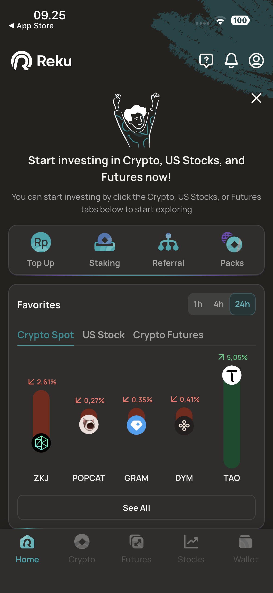
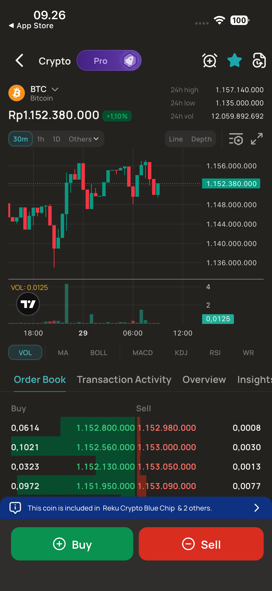
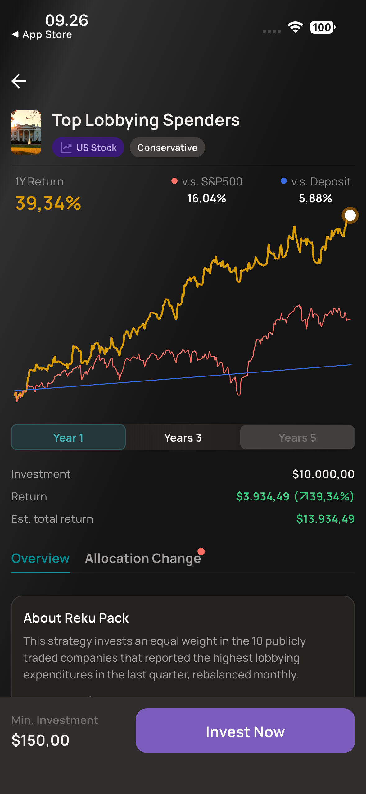
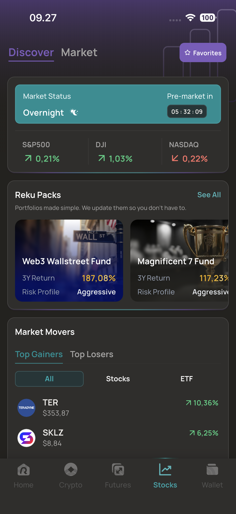
Internal order management and market intelligence workspace for a photobooth business. The screenshots show real operational surfaces: booking, calendar, analysis, and payment documents.STACK / VERIFIEDNext.js 16 · React 19 · TypeScript · Tailwind CSS v4 · shadcn/ui · Prisma · Supabase PostgreSQL · Supabase Auth · Express.js · Playwright
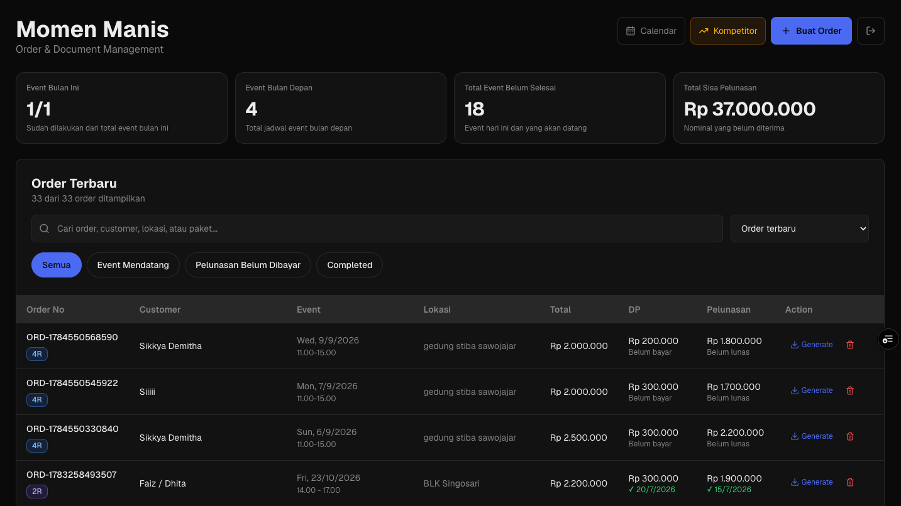
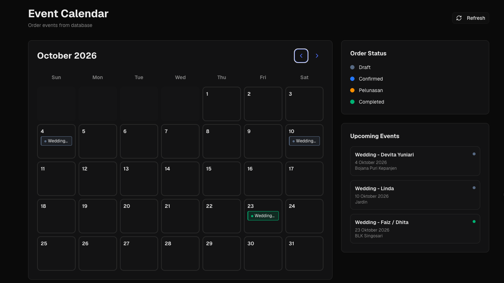
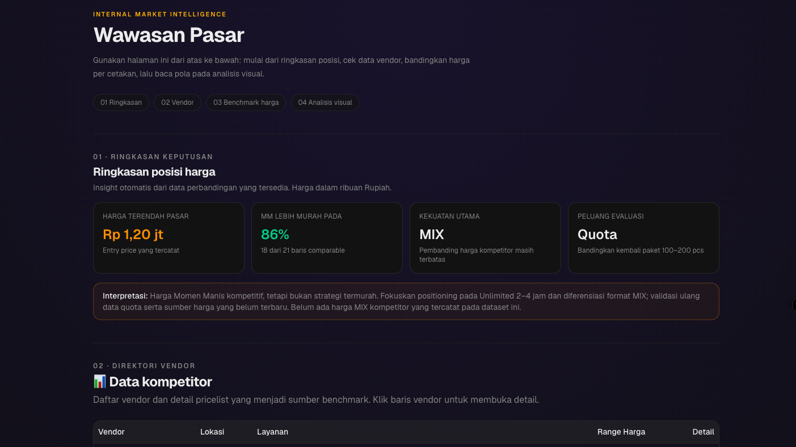
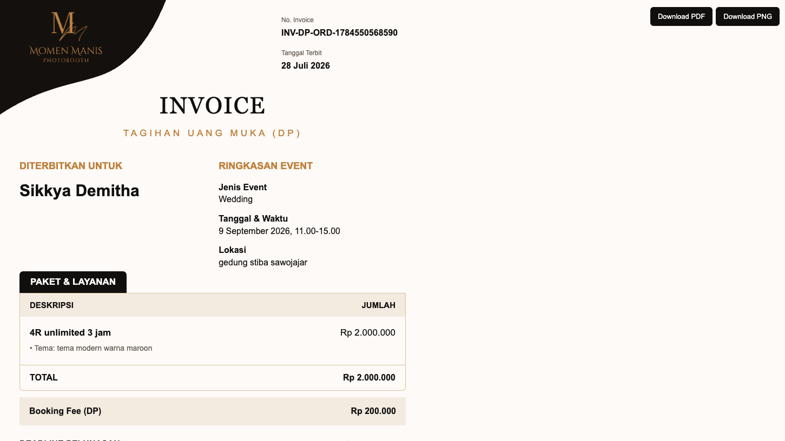
Residential dues and community finance management system. The interface is organized around payment visibility, verification, correction, cash, closing, and export workflows.
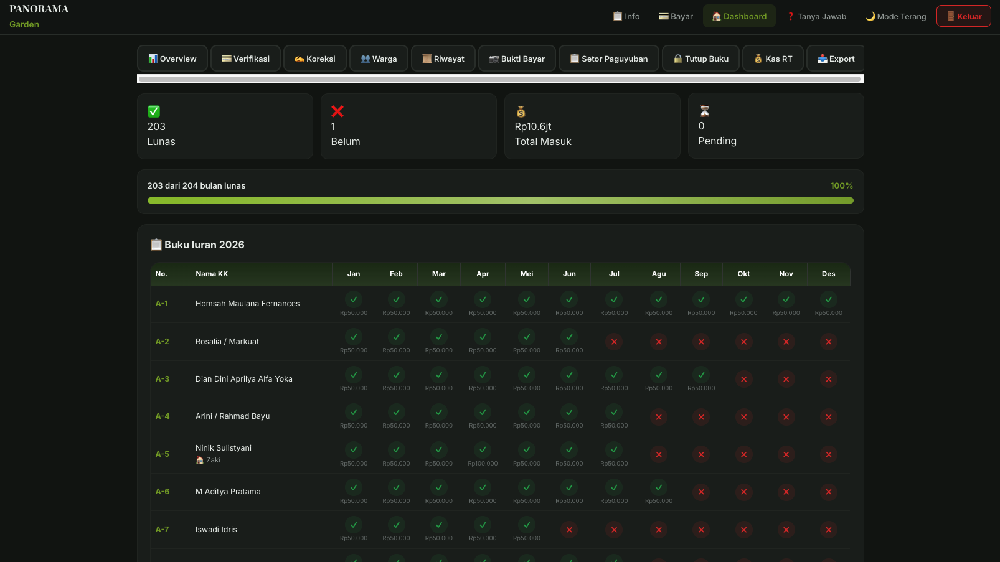
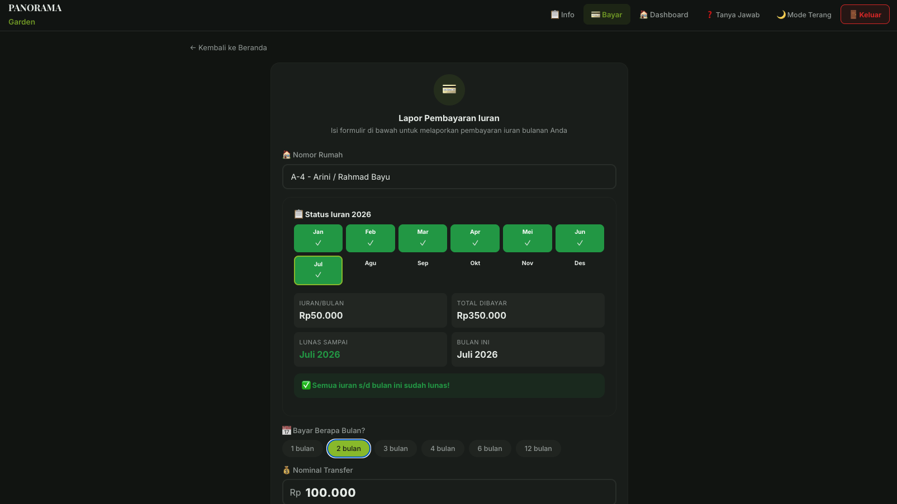
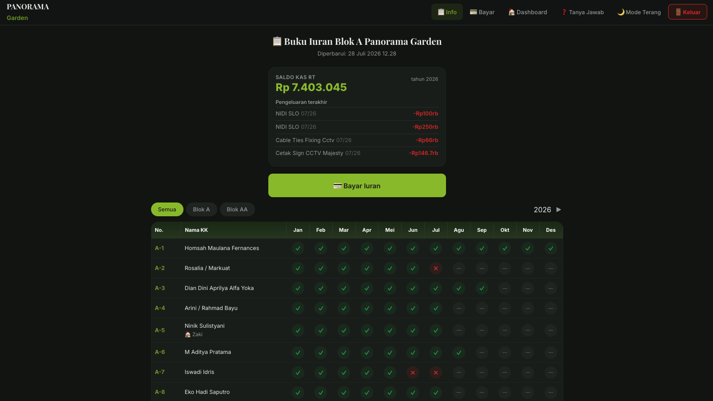
Mobile collection and payment workflow for PDAM field officers. The evidence covers dashboard, barcode scanning, customer detail, and payment receipt surfaces.
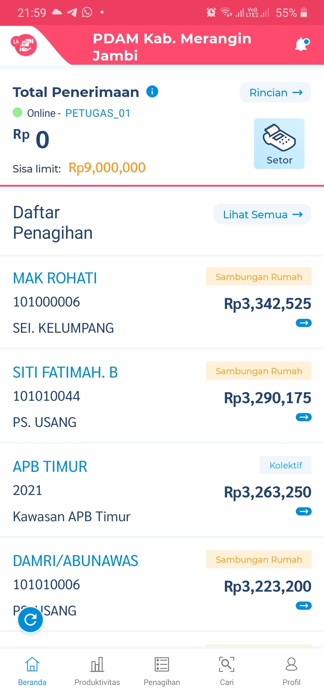
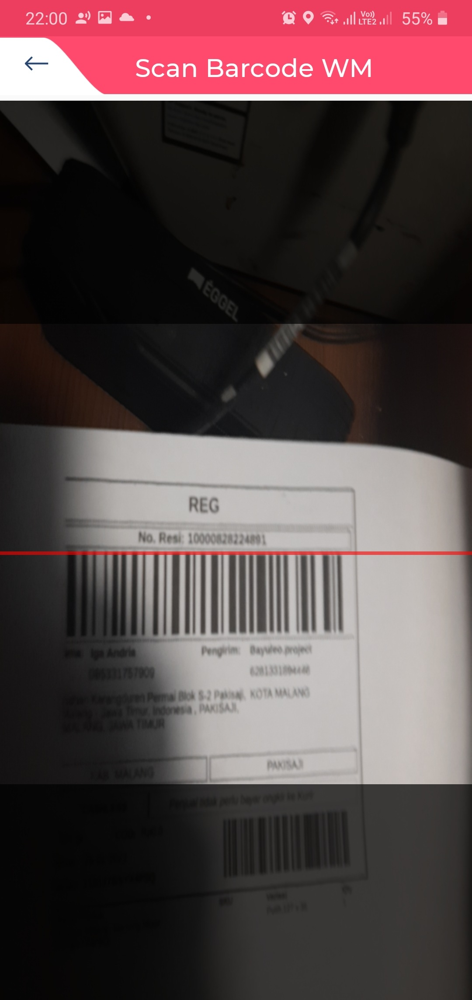
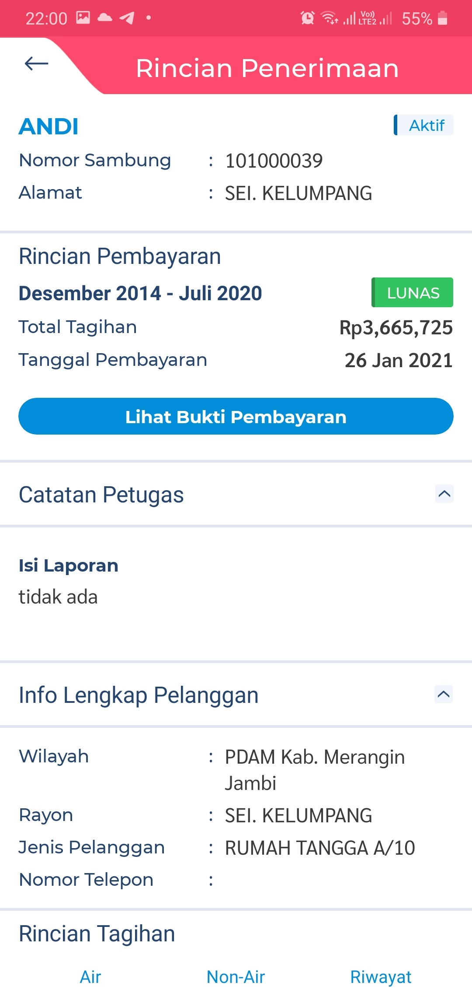
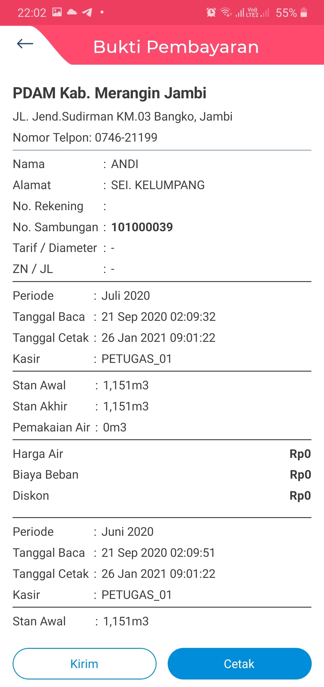
Agent online payment app untuk top-up saldo telepon dan pembayaran tagihan di Indonesia.
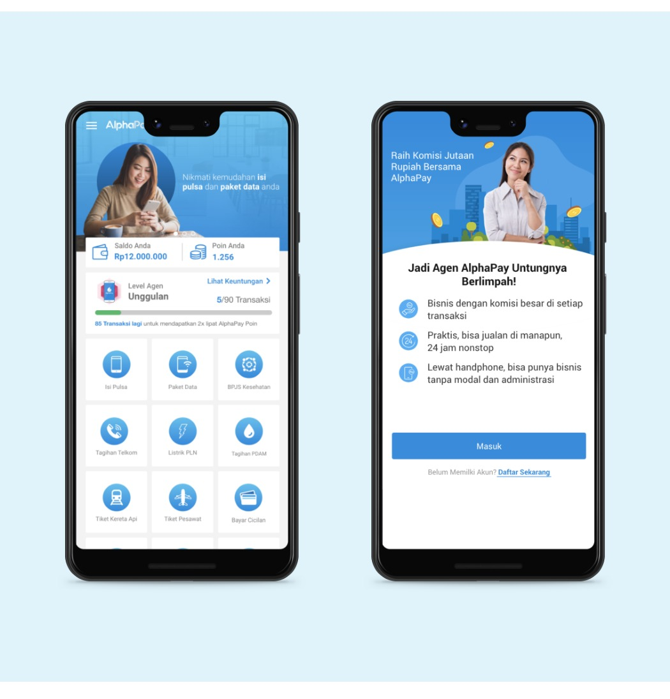
Commercial office-space discovery and leasing website. Homepage search and listing workflow, plus a building detail page with property gallery, related building, and enquiry flow.STACK / SOURCETechnical stack not published until source is verified.